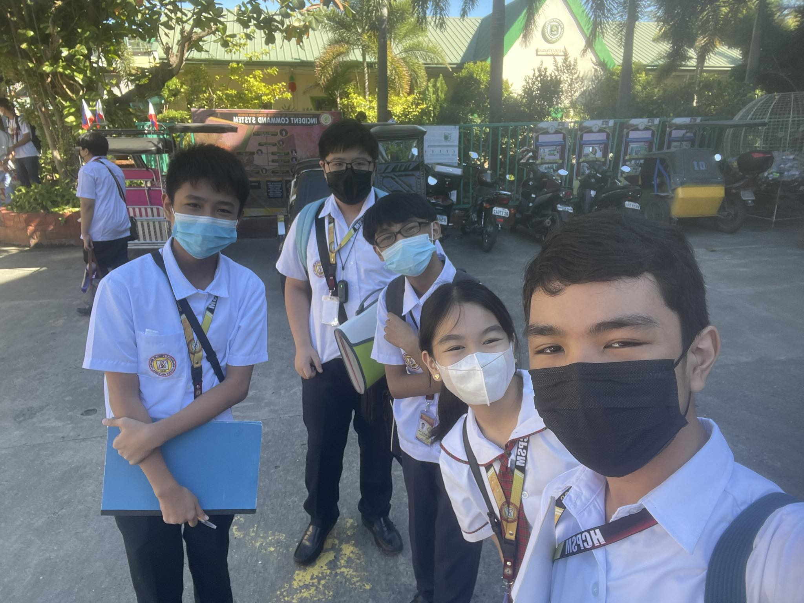

Micah Lui Jael H. Dayao // 8-Pearl WEBPAGE ABOUT ME - PT#1 IN ICT 8
Welcome to my First Webpage! I am Micah Lui Jael H. Dayao, a curious, ecstatic,
and bright student from the section 8-Pearl. As you are viewing this,
I present to you my 1st Performance Task in ICT - which is making an webpage all about myself using html.
So now, I invite you to freely explore and delve into my world, getting to know more about me! Enjoy!
THE BASICS
- Full name: Micah Lui Jael H. Dayao
- You can call me: Jael
- Age: 12
- Birthday: January 14, 2011
- Gender: Female
- I'm from: San Leonardo, Nueva Ecija
- Interests and Hobbies: Dancing, Playing the Piano, Poetry
5 FUN FACTS ABOUT ME!
1. I'm a campus journalist! That's right -- I'm currently an Envirex staffer for News writing and Copy Reading and Headline Writing.
I've also competed in the Division Schools Press Conference (DSPC), got second place, and qualified for the regional championship!
In the Regional PressCon, though, I got 8th place all in all for the category Copy Reading and Headline Writing.
2. I dance in our church for the Lord! I'm a Born Again Christian
serving the Lord under Jesus is Lord Church. I'm a part of the Elyon Doulos Ministry, that in which we dance with tambourines,
praising and worshipping God.
3. I've been to U.A.E.!
We went their on vacation back in 2019 when I was 8. We went to different landmarks like
Global City, Miracle Garden, Burj Khalifa and even the King's Palace! It was a pretty fun adventure!
4. I love writing poems and songs!
I always get pumped when we have a performance task wherein we need to write a poem or a song.
In my opinion, these activities can help me unleash my creativity and promote critical thinking.
You can watch our performance task above to see an example of a song I wrote under the tone "Team Yey"!

5. I love Math!
One of my favorite subjects is Mathematics! It's not that I'm pretty good at it, but I like how it
helps me practice my computational thinking skills and that I know I can use it in the future.
I even joined a Math competition last year in 7th Grade with my classmates! (Photo above for reference.)
GET TO KNOW ME AND MY FAMILY!
Watch my performance task #1 in ICT for the 1st quarter and get to know more about me and my
family! Click the "play" button below!
- Consistent With High Honor student since kinder
- Class Valedictorian (Elementary)
- ASMEPPS Regional Science Quiz Bee Champion (Grade 7)
- ASMEPPS National Science Quiz Bee Participant (Grade 7)
- National Science and Technology Week Tech Talk Champion (Grade 7)
- Photojournalism Competition - Bronze (Grade 7)
- DSPC Finalist in Copy Reading and Headline Writing (Grade 7)
- DSPC Overall 2nd Placer in Copy Reading and Headline Writing (Grade 7)
- RSPC 8th Placer in Copy Reading and Headline Writing (Grade 7)
- ASMEPPS Regional Science Quiz Bee Participant (Grade 8)
- Science Week Infomercial 3rd Place (Grade 8)
- Envirex staffer of News Writing and Copy Reading and Headline Writing (Grade 8)
That's all! You've reached the end of my page. I hope you learned a thing or two about me!
Always remember, you are loved by God!
Romans 12:2
Do not conform to the pattern of this world, but be transformed by
the renewing of your mind. Then you will be able to test and approve
what God’s will is— His good, pleasing and perfect will.
Thank you for viewing my site!
Any feedback? Message me on FaceBook!
FaceBook: Jael Hudencial-Dayao